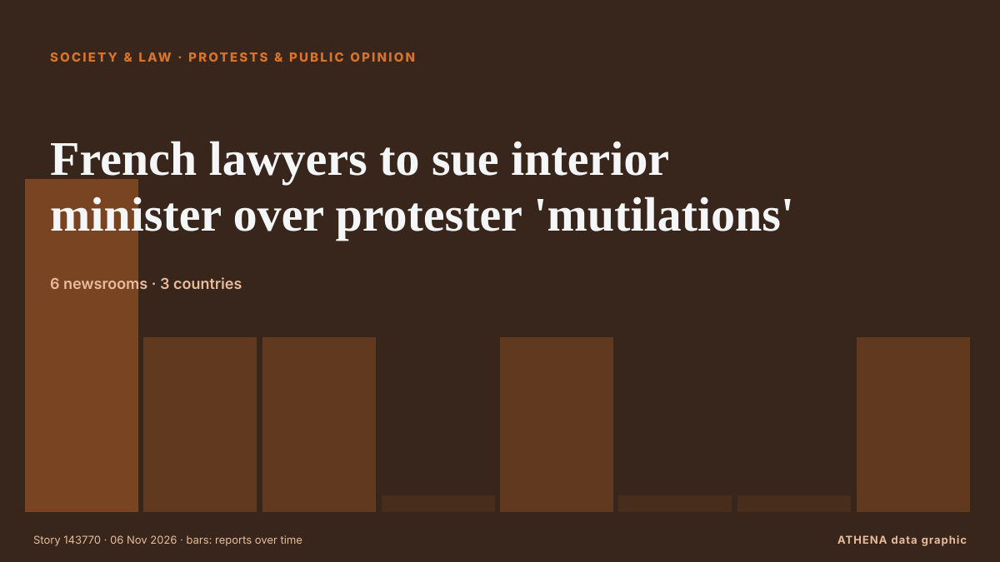

الاحتجاجات والرأي العام
برعايةبرعاية  Cybernetics and Artificial Intelligence Lab Welcome to the Cybernetics and Artificial Intelligence Laboratory, established at the Department of Business Administration of the National and Kapodistrian University of Athens. The lab is headed by Professor Dimitrios Thomakos. The lab aims to do research that can be published in top venues. Our research uses tools and methods of Artificial Intelligence, and lies in the following areas: - Forecasting - Decision making - Cyber security - Finance We are always looking forward to collaborating with exceptional students!
Cybernetics and Artificial Intelligence Lab Welcome to the Cybernetics and Artificial Intelligence Laboratory, established at the Department of Business Administration of the National and Kapodistrian University of Athens. The lab is headed by Professor Dimitrios Thomakos. The lab aims to do research that can be published in top venues. Our research uses tools and methods of Artificial Intelligence, and lies in the following areas: - Forecasting - Decision making - Cyber security - Finance We are always looking forward to collaborating with exceptional students!
| 25 أكتوبر | 0 |
|---|---|
| 26 أكتوبر | 0 |
| 27 أكتوبر | 0 |
| 28 أكتوبر | 0 |
| 29 أكتوبر | 0 |
| 30 أكتوبر | 1 |
| 31 أكتوبر | 0 |
| 1 نوفمبر | 1 |
| 2 نوفمبر | 1 |
| 3 نوفمبر | 4 |
| 4 نوفمبر | 4 |
| 5 نوفمبر | 7 |
| 6 نوفمبر | 2 |
| 7 نوفمبر | 0 |
تُعرض العناوين بالإنجليزية كما نُشرت.

French lawyers to sue interior minister over protester 'mutilations'
The lawyers are lodging a complaint with the Court of Justice of the Republic against Interior Minister Laurent Nuñez 'for the orders he gave to use weapons which he knows to be mutilating.' من Le Monde (English)
Sheikh Hasina vows to return to Bangladesh in December despite death sentence
Dhaka: Former Prime Minister Sheikh Hasina, ousted in a mass uprising in 2024, has told The Associated Press that she remains committed to returning to Bangladesh from exile in India next month… من Gulf News
Eiffel Tower closed amid nationwide protests, strikes in France
The Eiffel Tower, built in 1889 in honor of the French Revolution, faced the threat of demolition after its completion. من Times of India
Jon Boutcher: PSNI Drumcree operation ‘not hostage’ to paramilitary threats
Orange Order parade banned from nationalist Garvaghy Road. من The Irish News (Belfast)
Serbia detains police officers over alleged use of force against protesters
BELGRADE, Nov 4 - Serbian authorities detained nine active police officers and one former officer on Wednesday for allegedly using excessive force against detainees during anti-corruption protests… من The Straits Times
‘Harry Potter’ Store Opening in London Draws Trans Rights Protesters Amid J.K. Rowling Controversy
Transgender rights protesters gathered outside the opening of London’s new “Harry Potter” flagship store on Wednesday, as controversy surrounding author J.K. من Variety
French Strike Fills Lyon With Up to 55,000
Lyon’s strike march drew 30,500 by official count and 55,000 by the union’s, under a route ban, with clashes at its edges and 270,000 out nationwide. من The Rio Times
France faces new protests as Macron seeks to prevent repeat of October unrest
Hundreds of thousands of protesters are expected to march through French cities and public... من The Citizen (Tanzania)
Workers strike across France, hundreds of thousands expected to protest
Demonstrators are demanding an increase in the minimum wage and higher salaries for all workers, among other reforms. من Al Jazeera English
Danish students join European protests against education cuts
Danish students protested in Copenhagen against proposed cuts to student allowances as part of a broader European movement. من Arab News
UK police arrest 25 Palestine Action supporters outside court
Defend Our Juries has staged the protest today in a call for the government to lift the terror ban on the proscribed group. من Evening Standard (London)
Bangladesh garment factories close as workers clash with police in pay protests
Police have clashed with garment workers demanding higher minimum wages in Bangladesh, where days of protests have disrupted an industry that employs about 4 million people. من ABC News (International)
Turkic bloc to assess possible Russian bid jointly: AKP’s Zorlu
Türkiye would consider a possible Russian bid to join the Organization of Turkic States (OTS) as an observer with the approval of all member countries, ruling Justice and Development Party (AKP)… من Hürriyet Daily News
Iran bans sales of jewelry with monarchy-linked symbols in Khamenei hometown
Iranian authorities have banned the display and sale of jewelry and coins bearing the Lion and Sun emblem or imagery associated with the country's former monarchy in the northeastern city of Mashhad… من Iran International (English)
Iran executes two men in case tied to January protests: What to know
Iran has stepped up executions during the war with the US, and attacks on police are on the rise in the southeastern province of Sistan and Baluchistan. من Al-Monitor